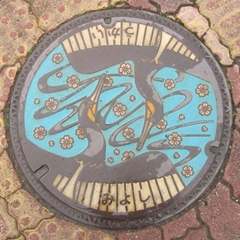

朱華園から１００メートルぐらい海側のあたり。
出雲（いづも）街道の標石。
尾道は古くから海陸交通の要衝とし
て栄えてきた この道標は旧出雲街
道に立っていたもので かつては馬
車経繹として石見（島根県）大森銀
山の銀を運んだシルバーロードの繁
昌を物語るものである
この道標の前からいづも往来を北へ
辿ると 先づ美郷の三成 ついで木
の庄の市原と畑の一里塚を経て 道
は市村（現御調町）に入る
この街道の道幅は七尺(約二．一二ｍ)
のきまりであった
撰文クラブ尾道
書 岡田研山
平成二年九月二十四日
クラブ尾道創立三十五周年記念事業
尾道（おのみち）。
歴史的仮名遣いだと、
「をのみち」です。
山の峰すじの道の意。
水脈（みを）、尾根（をね）
大蛇（をろち）の「を」です。
潮の道、あるいは塩の道の意味
ではないかとの説もありますが、
潮と塩の古いかなづかいは「しほ」です。
その説が正しいと仮定すれば、
保道（ほのみち）、あるいは於道（おのみち）
という表記になっていなければならないはず。
御調町。
世羅町。
梨と、鈴蘭。
吉舎町。
吉（よ）き舎（やど）りかな
三良坂町。
菊の花。

みよし
うかい
三次中央病院（南）交差点付近にて。
これは珍しいかも？
なんだか、レアなアイテムを
ゲットする位置ゲーみたいな感覚ですね。
布野村。
布野村。
さかなバージョンです。